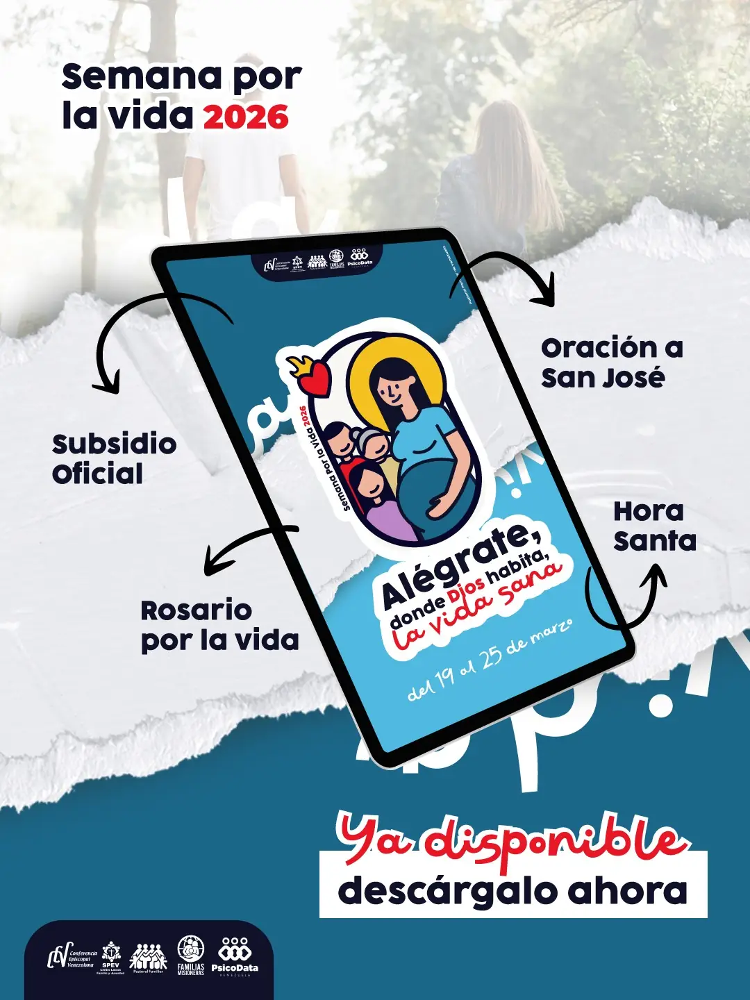

Familia
Semana por la Vida
Cada marzo, el Área de Familia y Vida propone una semana para defender y valorar la vida humana desde la familia. En 2026 fue del 19 al 25 de marzo.

Qué es
La Semana por la Vida va del 19 de marzo, día de San José, al 25 de marzo, fiesta de la Anunciación del Señor. La edición de 2026 se inspiró en el «Sí» de María. Está dirigida a fieles, familias, parroquias y movimientos apostólicos. Según la CEV, fue la vigésima edición.
Edición 2026
- Lema: «Alégrate, donde Dios habita, la vida sana».
- Organiza: el Área de Familia del Centro de Laicos, Familia y Juventud.
- Formato: tres encuentros formativos virtuales por Zoom, con transmisión por YouTube, basados en el subsidio de la semana.
Los encuentros trataron estos temas:
- 12 de marzo: emociones, espiritualidad y acompañamiento al inicio de la vida: dos mujeres, dos historias, con un sacerdote jesuita. Alrededor de cien agentes de pastoral llenaron la sala de Zoom.
- 18 de marzo: «Maternidad, Vida y Misión», con una psicóloga clínica.
- 25 de marzo: «La mujer, maestra y pedagoga en los procesos de evangelización», formación de cierre anunciada por la CEV el 20 de marzo.
El 18 de marzo el Área estrenó su canal de YouTube, «Área de Familia», donde quedan las formaciones. En las diócesis hubo bendiciones de vientres, jornadas de oración y caminatas por la vida en las parroquias.
Materiales
La CEV informa que el Centro difundió por sus redes sociales:
- El subsidio oficial de la semana, en PDF.
- Un Rosario por la Vida.
- Una oración a San José.
- Una propuesta de Hora Santa.
Años anteriores
En 2022 la semana tuvo el lema «Custodiar toda la vida». Se hizo en formato virtual, del 20 al 27 de marzo, y la abrió el II Seminario por la Vida, los días 11 y 12, con cuatro ponencias. En 2024 el Área hizo tres formaciones virtuales en abril, sobre la vida en Amoris Laetitia, la trata de personas y el buen trato a niños y adolescentes.